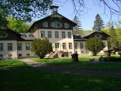
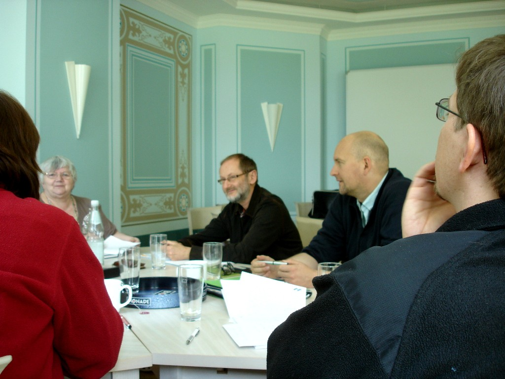
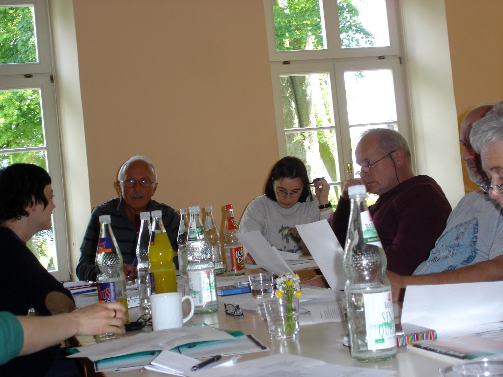
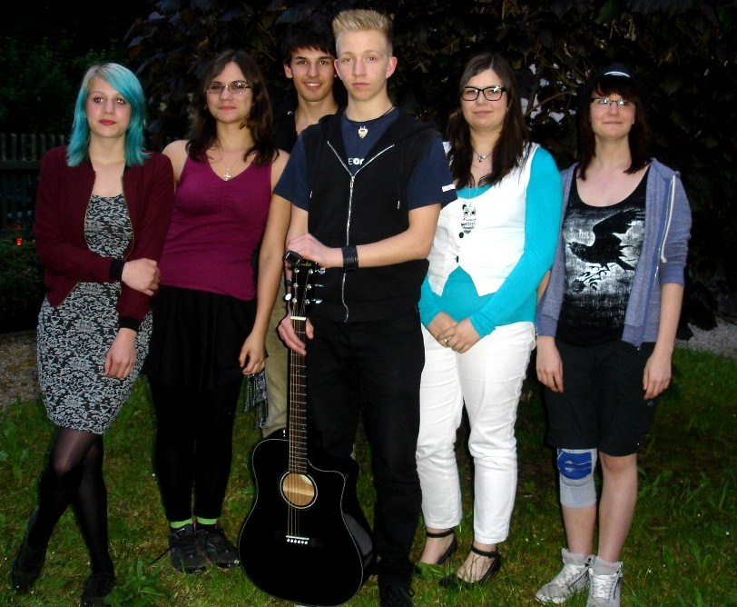
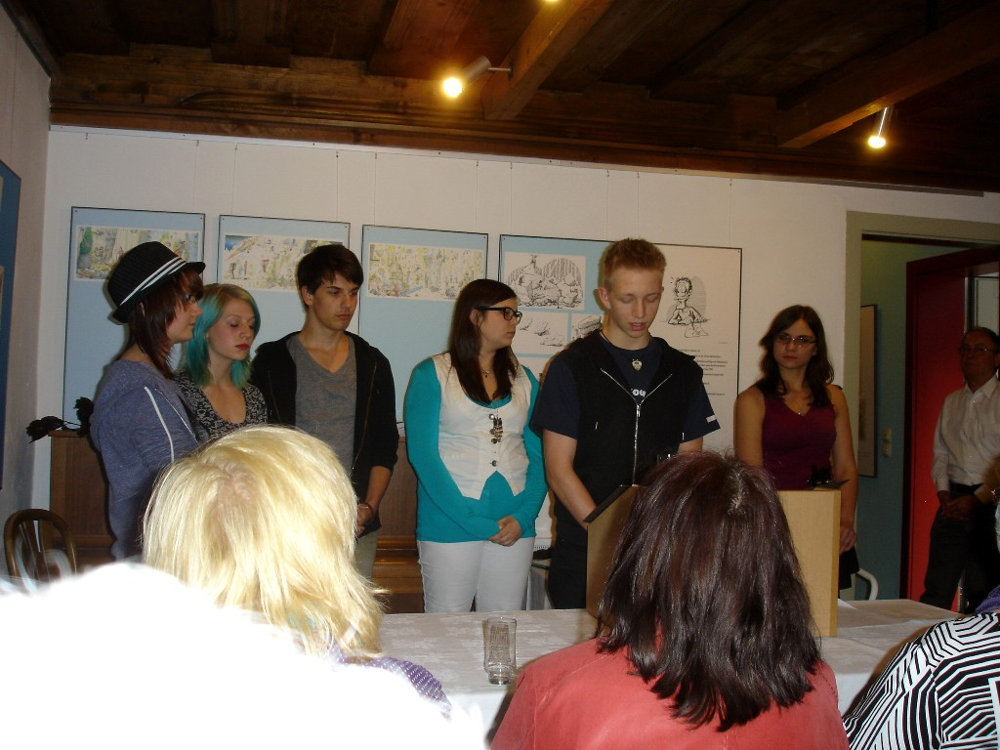
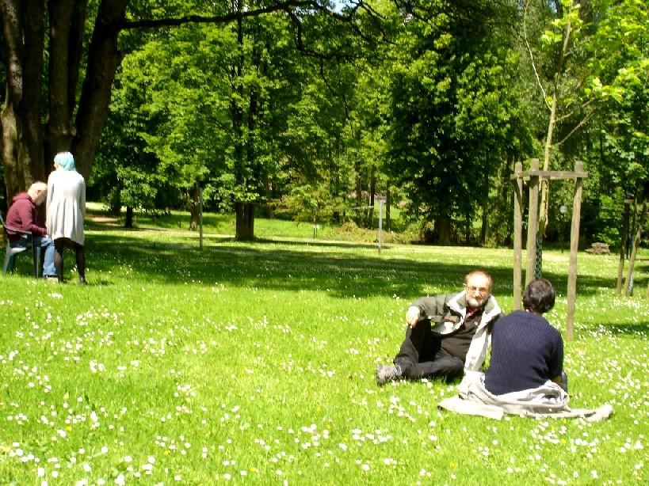

Zum silbernen Jubiläum – der 25. Literaturwerkstatt des Vereins in Jahresfolge – trafen sich die 30 Teilnehmer aus vier Bundesländern erstmals in einem Schloss: dem einstigen Jagdschloss Sinnershausen in der Rhön. In bewährter Weise kümmerten sich die Seminarleiter Matthias Göritz (Prosa), Nancy Hünger (Lyrik) und Ulrike Blechschmidt (Jugend) um die Teilnehmer. Beim Lagerfeuer am Freitagabend fanden jung und alt zueinander; Rocky Hoffmann setzte sein musikalisches Können ein. Im Baumbachhaus konnten die Autorinnen und Autoren mit neuen Texten und einem starken Jugendprogramm vor ausverkauftem Haus brillieren. Cornelia Thiele vom Kieck-Theater Weimar setzte den Punkt aufs i mit ihrem Mitmach-Vortrag zum Gestalten von Texten beim Auftritt.






